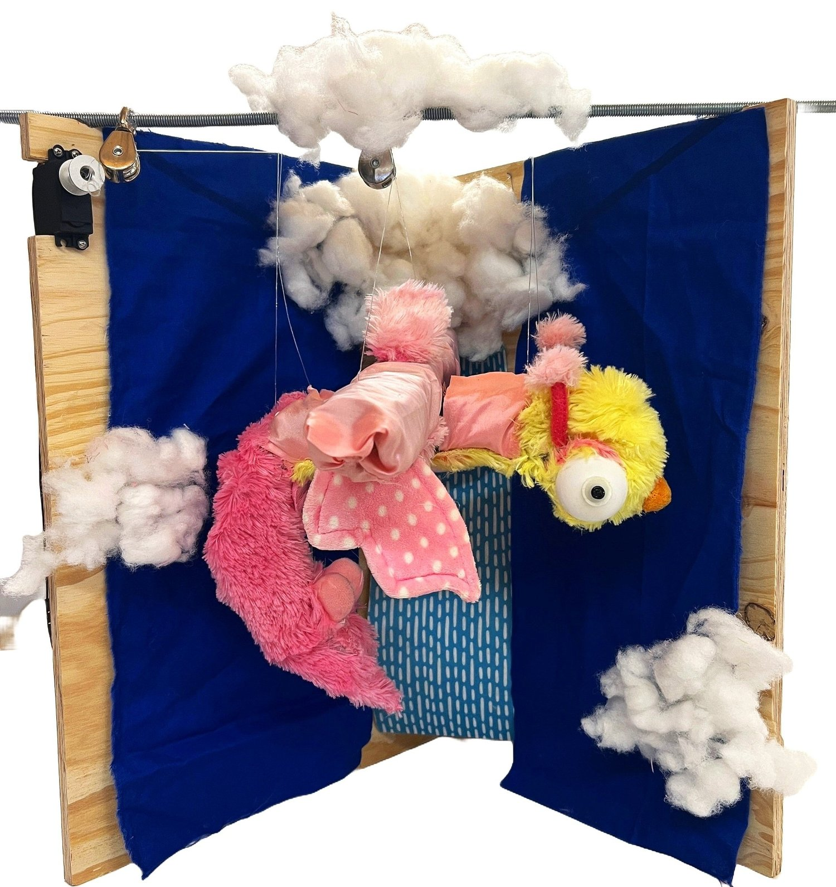

Dragonbird
First-ever spotting of a previously unknown species that appears to be a hybrid of a bird and a dragonfly, dubbed the Dragonbird. The footage captures the first and final pure existence of the creature. How eerie to have a moment devoid of any narrative or societal and ethical considerations. The Dragonbird is presented as it is, without any human-imposed context or interpretation. How instantly it is that nature becomes engrossed for human consumption.
